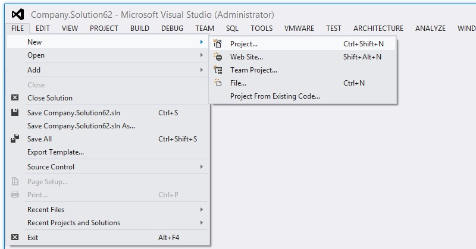
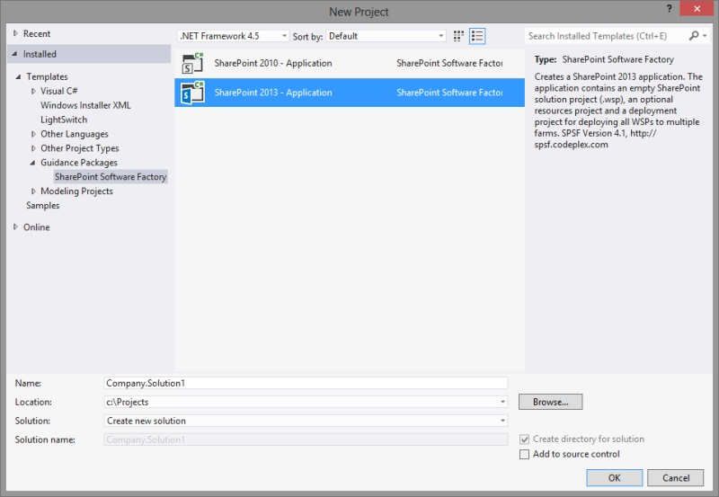
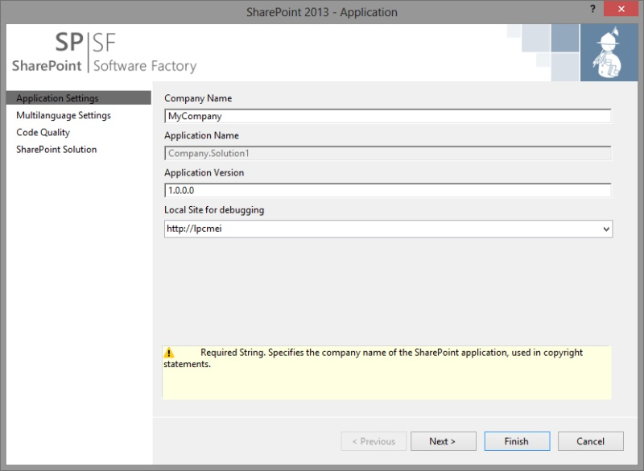
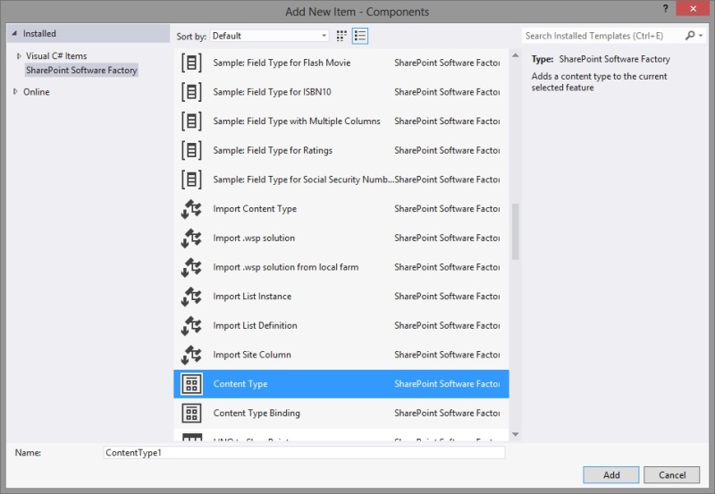
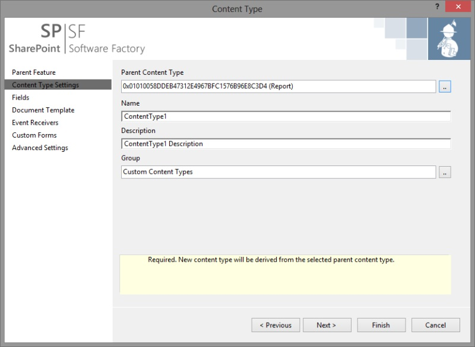
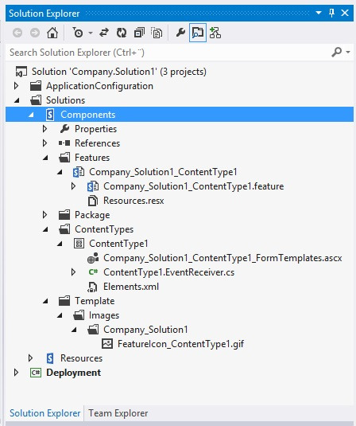
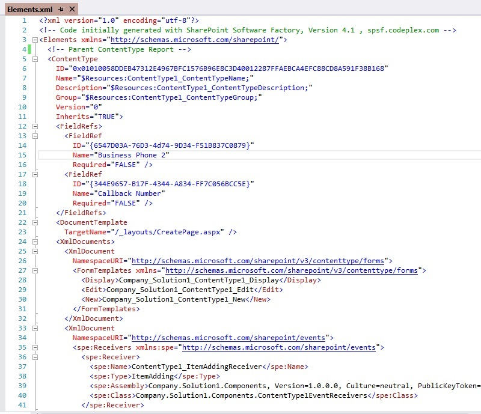
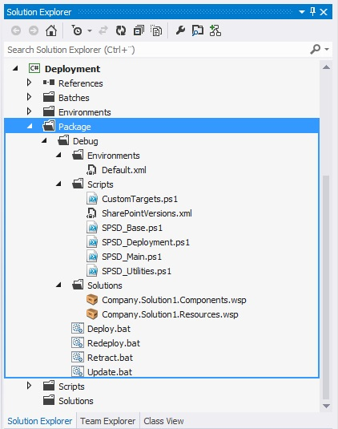

How to use the SharePoint Software Factory?
To unleash the power of the SharePoint Software Factory, the SharePoint application project has to fulfill some requirements like solution/project structure and existing configuration files. Creating such a project with SPSF does NOT leave you stuck with it forever. At any time you wish to continue development without SPSF, you can uninstall it and your projects will still be compilable and deployable. After successful installation of SPSF SharePoint SoftwareFactory you get started in Visual Studio.
Create a new project in Visual Studio
Start Visual Studio 2012 and click "File -> New -> Project" to create a new Visual Studio project.

In the project template dialog under the section "Guidance Packages -> SharePoint SoftwareFactory" choose an appropriate project template e.g. "SharePoint 2013 - Application".

Click "OK" and and the SharePoint Project Wizard will open.

Run SPSF recipes to create SharePoint code
Most SPSF recipes are displayed in context menus depending on the current selection.
For instance the recipe "Create new Content Type" is only displayed on projects which will create a .wsp solution and on existing features in that project.

Alternatively you can use the "Add -> New Item..." (Ctrl+Shift+A) dialog to run the SPSF recipes.

The recipe will open a wizard, which allows you to specify the required information and choose dependcies from existing artefacts in your project or in out of the box SharePoint.

When you finish the wizard the necessary code will be generated by SPSF following best practices in naming the files, classes and structuring of the solution. If you enabled resource managment upon project creation all language resources will be automatically stored in a .resx file.

All your settings in the wizard are reflected in the generated files.

Build a deployment package
Whenever you require a deployment package which contains all WSP files or if the solution should be deployed to a different farm, you can build the "Deployment" project which collects all solutions, deployment configurations and the necessary PowerShell scripts.
